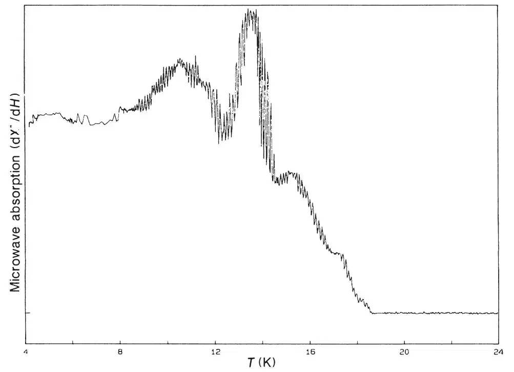
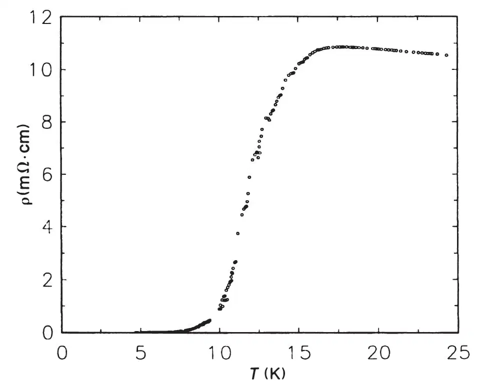
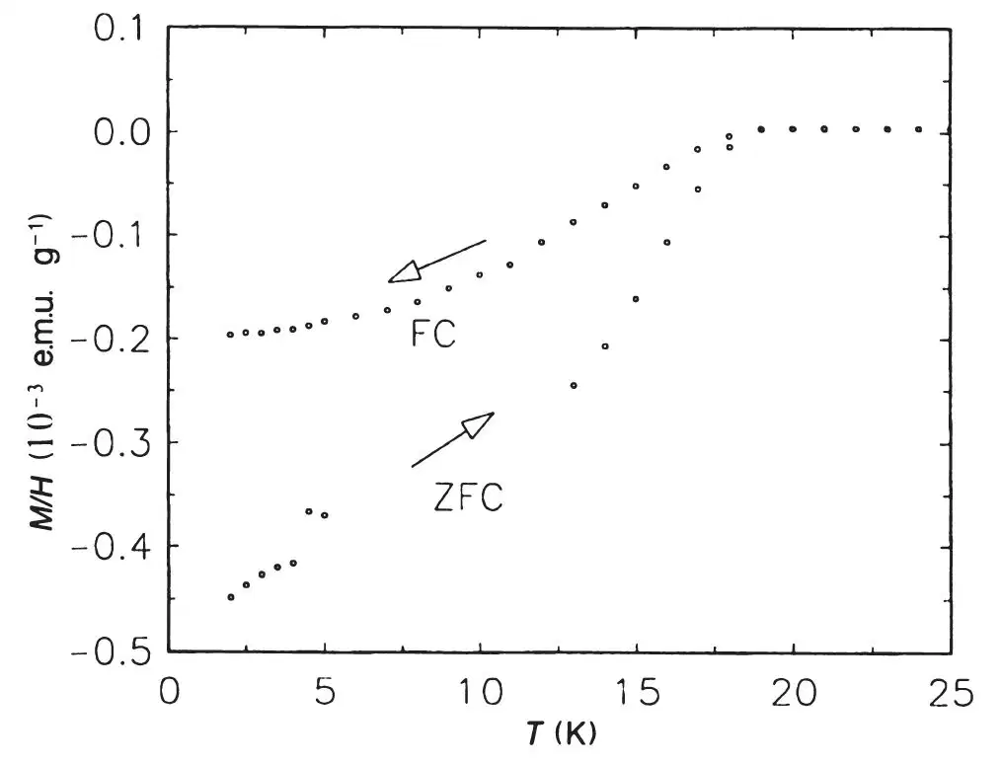

中文
中文A. F. Hebard et al.
Editor’s Note
The discovery in 1990 of a method for making large quantities of the cage-like carbon molecule C60 led to intensive research into its physical and chemical behaviour. Here Art Hebard and colleagues at AT&T Bell Laboratories in New Jersey report one of the most striking outcomes of that work: when doped with alkali metals, C60 becomes superconducting at low temperatures, conducting electricity without resistance. The discovery followed soon after the Bell Labs team found that the doped solid had metallic conductivity. The onset temperature of superconductivity is relatively high compared to normal metals, and inspired hopes that it might be made higher still—as indeed it soon was. The finding never spawned practical applications, but was of immense theoretical interest. 中文
The synthesis of macroscopic amounts of C60 and C70 (fullerenes)1 has stimulated a variety of studies on their chemical and physical properties2,3. We recently demonstrated that C60 and C70 become conductive when doped with alkali metals4. Here we describe low-temperature studies of potassium-doped C60 both as films and bulk samples, and demonstrate that this material becomes superconducting. Superconductivity is demonstrated by microwave, resistivity and Meissner-effect measurements. Both polycrystalline powders and thin-film samples were studied. A thin film showed a resistance transition with an onset temperature of 16 K and essentially zero resistance near 5 K. Bulk samples showed a well-defined Meissner effect and magnetic-field-dependent microwave absorption beginning at 18 K. The onset of superconductivity at 18 K is the highest yet observed for a molecular superconductor. 中文
THE sensitivity to air of alkali-metal-doped fullerenes (AxCn) limits the choice of sample preparation and characterization techniques. To avoid sample degradation, we carried out reactions with the alkali metal vapour and C60 in sealed tubes either in high vacuum or under a partial pressure of helium. The C60 was purified by chromatography1 of fullerite2 and was heated at 160 ℃ under vacuum to remove solvents. 中文
Small amounts of the individual fullerenes (~0.5 mg) were placed in quartz tubes with alkali metals and sealed under vacuum. These samples were subjected to a series of heat treatments and tests for superconductivity by 9-GHz microwave-loss experiments5. Preliminary tests indicated that only the K-doped C60 showed a response consistent with a superconducting transition (Fig. 1). For this reason, together with the fact that KxC60 showed the highest film conductivity1, we focused our studies on the K-doped compound. 中文

Fig. 1. Microwave loss as a function of temperature for KxC60 in a static field of 20 Oe. 中文
The conductivity measurements were performed on potassium-doped films of C60 that were prepared in a one-piece all-glass version of the apparatus described previously4. This reaction vessel was sealed under a partial pressure of helium before reaction. This configuration allowed both in situ doping and low-temperature studies of thin films. All measurements were made in a four-terminal Van der Pauw configuration using a 3-μA a.c. current at 17 Hz. Figure 2 shows the temperature dependence of the resistivity of a 960-Å-thick KxC60 film. The film was doped with potassium until the resistivity had fallen to 5×10–3 Ω cm. The resistivity increases by a factor of two on cooling the sample to near 20 K. Below 16 K, the resistivity starts to decrease; zero resistivity (<10–4 of the normal state) is obtained below 5 K. The 10–90% width of the transition is 4.6 K. At 4 K we measured the lower bound to the critical current to be 40 A cm–2. 中文

Fig. 2. Temperature dependence of the electrical resistivity of a 960-Å-thick film of KxC60. 中文
A bulk polycrystalline sample of nominal composition K3C60 was prepared by reaction of 29.5 mg of C60 with 4.8 mg potassium. The amount of potassium was controlled volumetrically by using potassium-filled pyrex capillary tubing cut to size in a dry box. The reaction was run with the C60 in a 5-mm fused silica tube joined to a larger tube in which the potassium-containing capillary was placed. The tube was sealed after being evacuated and refilled with 10–2 torr of helium to serve later as a thermal-exchange gas for low-temperature measurements. With the C60-containing end of the tube at room temperature, the potassium was distilled from the capillary in a furnace at 200 ℃. Some reaction of the potassium with the quartz tube, visible as a dark brown discoloration, was observed at this temperature. Unreacted potassium was observed after this period. Following distillation of the potassium to the C60 end, the tube was shortened by sealing to about 8 cm and heated to 200 ℃ for 36 h. Finally, the tube was resealed to a length of about 4 cm for magnetic measurements. 中文
The temperature dependence of the d.c. magnetization of the sample with nominal composition K3C60 was measured in a SQUID magnetometer (Fig. 3). On zero-field cooling the sample to 2 K, a magnetic field of 50 Oe was applied. On warming, this field is excluded by the sample to 18 K; this verifies the presence of a superconducting phase. The bulk nature of superconductivity in the sample is demonstrated unambiguously by cooling in a field of 50 Oe. A well defined Meissner effect (flux expulsion) develops below 18 K. The shape of the magnetization curve, in particular the temperature-independent signal at low temperature, indicates good superconducting properties for this sample. Also noteworthy is the relatively narrow transition width. The magnitude of the flux exclusion for the zero-field-cooled curve corresponds to 1% volume fraction. This small fraction is possibly due to non-optimal doping or the granular nature of the sample. The large value of the Meissner effect for the field-cooled curve relative to the total exclusion, however, indicates bulk superconductivity in the electrically connected regions. 中文

Fig. 3. Temperature dependence of the magnetization of a KxC60 crystalline sample. The direction of temperature sweep in the field-cooled (FC) and the zero-field-cooled (ZFC) curves is indicated by the arrows. 中文
The universally accepted tests for superconductivity, namely a transition to zero resistance and a Meissner effect showing the expulsion of magnetic field, demonstrate unequivocally the existence of superconductivity in KxC60. The 18-K transition temperature is the highest yet reported for a molecular superconductor. This may be compared with the previously reported occurrence of superconductivity at 0.55 K in potassium-intercalated graphite6. We expect that optimization of composition and crystallinity will lead to further improvement in the superconducting properties. 中文
(350, 600-601; 1991)
A. F. Hebard, M. J. Rosseinsky, R. C. Haddon, D. W. Murphy, S. H. Glarum, T. T. M. Palstra, A. P. Ramirez & A. R. Kortan
AT&T Bell Laboratories, Murray Hill, New Jersey 07974-2070, USA
Received 26 March; accepted 4 April 1991.
References:
1. Kroto, H. W., Heath, J. R., O’Brien, S. C., Curl, R. F. & Smalley, R. E. Nature 318, 162-164 (1985).
2. Kratschmer, W., Lamb, L. D., Fostiropoulos, K. & Huffman, D. R. Nature 347, 354-358 (1990).
3. Meijer, G. & Bethune, D. S. J. Chem. Phys. 93, 7800-7802 (1990).
4. Haddon, R. C. et al. Nature 350, 320-322 (1991).
5. Haddon, R. C., Glarum, S. H., Chichester, S. V., Ramirez, A. P. & Zimmerman, N. M. Phys. Rev. B 43, 2642- 2647 (1991).
6. Hannay, N. B. et al. Phys. Rev. Lett. 14, 225-226 (1965).
Acknowledgements. We thank G. Dabbagh, S. J. Duclos, R. H. Eick, A. T. Fiory, R. M. Fleming, M. L. Kaplan, K. B. Lyons, A. V. Makhija, B. Miller, A. J. Muller, K. Raghavachari, J. M. Rosamilia, L. F. Schneemeyer, F. A. Thiel, J. C. Tully, R. Tycko, R. B. Van Dover, J. V. Waszczak, W. L. Wilson and S. M. Zahurak for valuable contributions to this work.